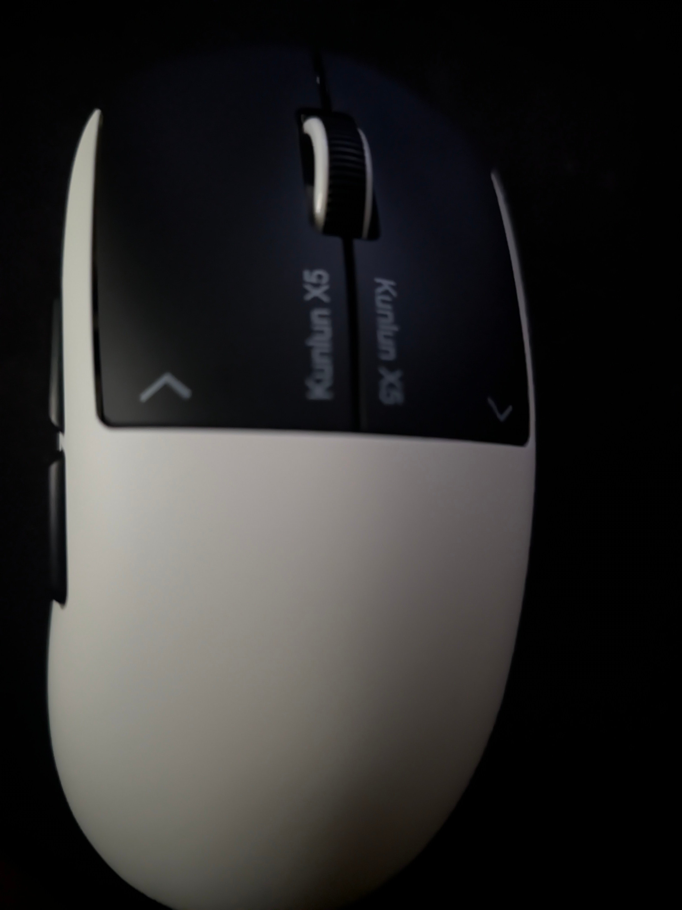
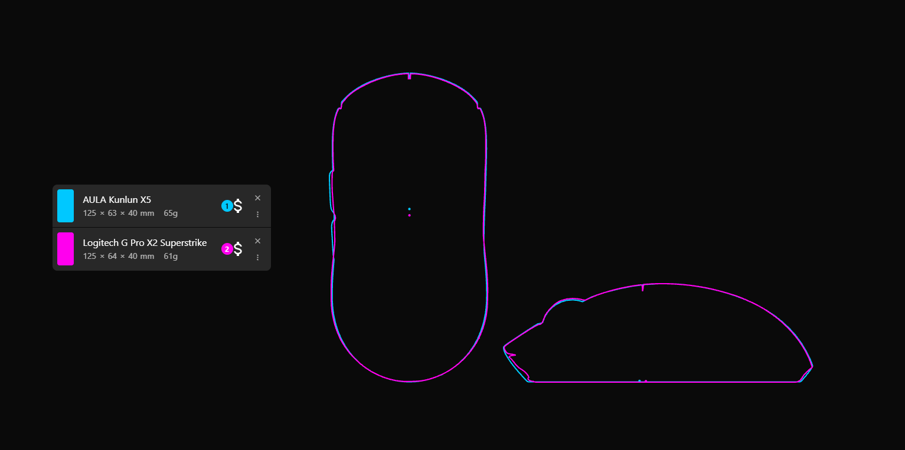
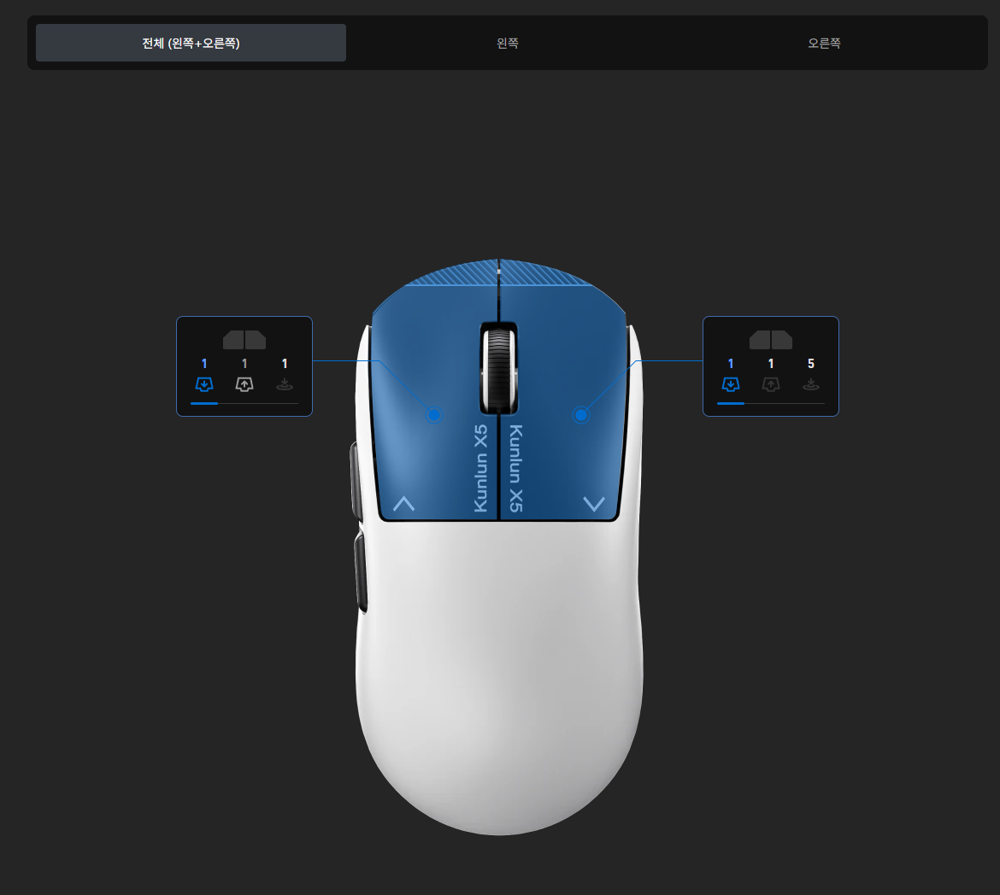
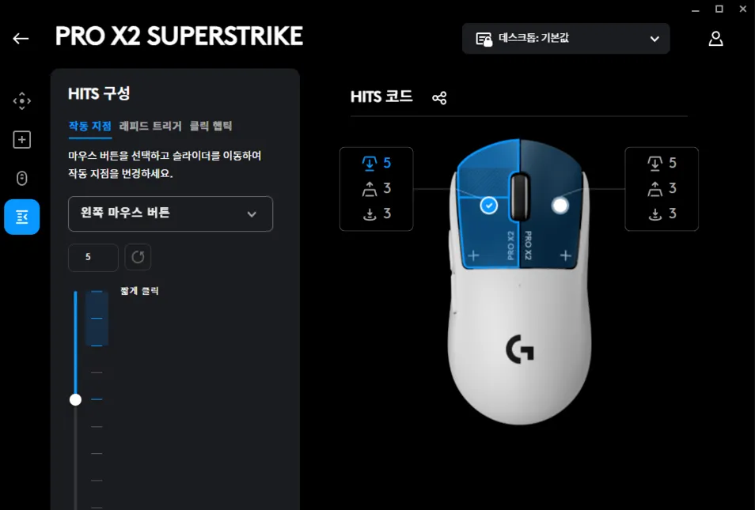

술먹었으면 자야하는데, 술김에 대륙제 지슈스 짭제품으로 추측되는걸 사게됬음
일단 마우스 쉘....

거의 일란성 쌍둥이급임
그리고 대륙제 마우스 특징인 쌈마이 쉘코팅인데 이마우스.. 매트코팅인데 지슈스 쉘 코팅 이랑 품질이 거의똑같음
그리고 제일 경악한거는

웹드라이버에서 마우스 셋팅설정하는 거 옆에 마우스 외형옆에 수치랑 그래프로 강도 표시해주는 UI가있는데....

외각선 강조랑 그래프표현이 반대로 되있는거 빼고는 지슈스 g허브 옵션창이랑 거의 동일함. 심지어 마우스 옆에 HITS 값이랑 레피드트리거 값 아이콘도 거의 똑같네...
그리고 대망의 사용감은..... 나 솔직히 지슈스랑 이거랑 눈감고 구분하라고하면 못함
약간 햅틱끝이 둔탁(?)하다빼고는 거의 동일함
심지어 버그까지 똑같음. 로지텍 지슈스 래피드 트리거 키면 햅틱피드백이 토독 하고 두번치는 버그같은게 있거든?
저 마우스에도 동일하게 생기더라?(....)
한줄요약 : 대륙이 양심을 버리면 이따위 물건도 나오는구나;; 로지텍 안에 산업스파이라도 심어놨나;
나도 술김에 호기심으로 사본거야(심지어 지슈스도있어) 반품해야할듯 배터리타임이 광고랑 천지차이남